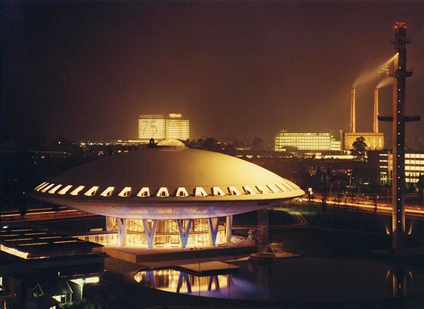
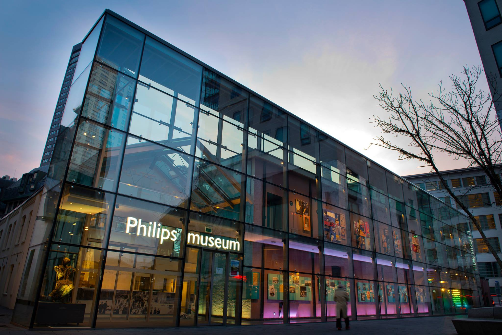

Evoluon werd gebouwd ter gelegenheid van het 75-jarig bestaan van Philips in 1966.
Het is een ontwerp van de architecten Louis Kalff (van 1925 tot 1960 hoofd van Philips Design) en Leo de Bever.
Het Evoluon is een futuristisch, ‘discusvormig’ gebouw. Er is niet veel fantasie voor nodig om de gelijkenis met een vliegende schotel te zien.
De inspiratie voor het Evoluon begon eind jaren ’50. Tijdens de eerste naoorlogse wereldtentoonstelling in 1958 in Brussel had Philips een zeer positieve
indruk achtergelaten met het Philips-paviljoen. In het paviljoen was o.a. het ‘Poème Electronique’ te bewonderen. Het ‘Poème’ geldt als een van de eerste
multimediale kunstwerken. Aan het spektakel werkte de bekende architect Le Corbusier samen met de componist Edgar Varèse. Het paviljoen trok in een half
jaar meer dan een miljoen bezoekers. Tijdens een gesprek van Frits Philips met zijn artistiek leider Louis Kalff begin jaren zestig kwam de ambitie om een
permanente expositieruimte in te richten, waarbij publiek inzicht moest kunnen krijgen in de evolutie van wetenschap en technologie, en zijn impact op de
samenleving. In 1963 wordt gestart met de bouw van het Evoluon Eindhoven. Mede door de extreem strenge winters is het in meerdere opzichten een huzarenstukje
dat de feestelijke oplevering in 1966 kon plaatsvinden. Het jubileumcadeau van Philips aan de stad Eindhoven en haar bevolking is een feit.
Bron: Philips

Midden in Eindhoven staat het oude fabriekje waar Gerard Philips in 1891 zijn eerste gloeilampen produceerde. Hier is het moderne Philips Museum, dat je meeneemt
in het verhaal van het bedrijf. Je ziet hoe Philips met innovatieve technologie een belangrijke rol speelt bij maatschappelijke veranderingen. Eerst met elektrisch licht,
later bij radio, televisie en de komst van het digitale tijdperk.
En op dit moment bevindt Philips zich in de voorhoede van grote omwentelingen in de gezondheidszorg. Altijd met als doel: het leven van mensen verbeteren.
In het Philips Museum werken negen vaste medewerkers en bieden we ongeveer vijf mensen een werkgelegenheidsplek aan. Daarnaast werken in het Philips
Museum meer dan 100 vrijwilligers. Deze vrijwilligers vallen onder de in 2014 opgerichte Stichting Philips Museum. De taken en verantwoordelijkheden van
deze vrijwilligers verschillen onderling sterk. De vrijwilligers zijn voor het Philips Museum van levensbelang. Zij geven mede vorm aan de beleving van
het Philips verhaal en aan de gastvrijheid van het museum.
Bron: Philips